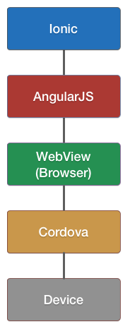
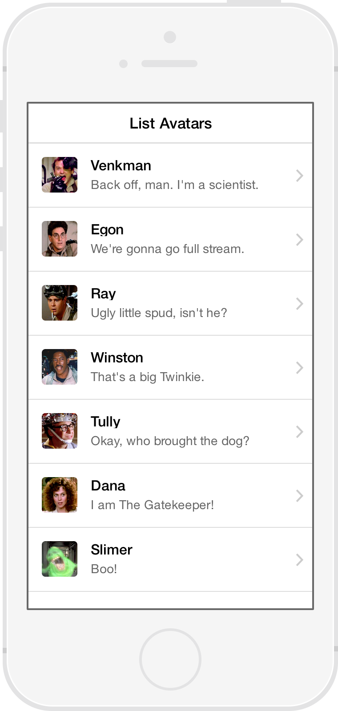
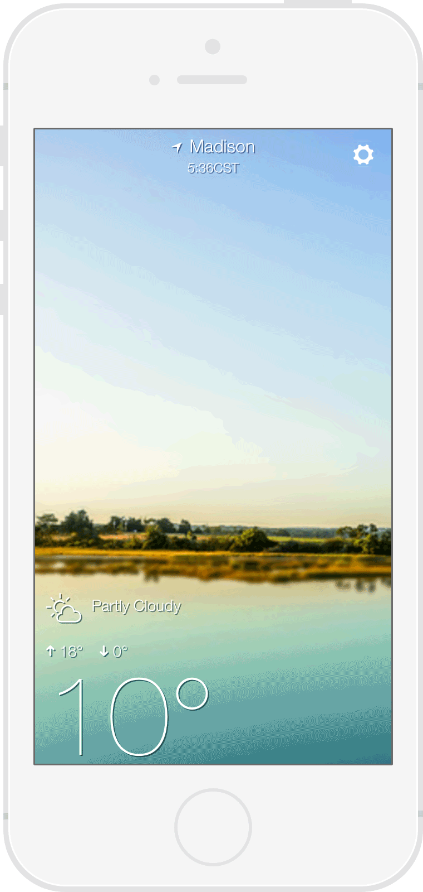

The beautiful, open source framework for developing hybrid mobile apps.
Jeremy Wilken @gnomeontherun
“So you want to build a mobile app?”
Imagine you have to build
an app for a resort.
You want
- Native performance and experience
- To build once and deploy cross platform
- To use JavaScript, HTML, CSS
- Controls such as side menus, tabs, etc
- Quick development
- Top notch development tools
“Howdy”
Ionic is a hybrid app user interface framework.
The missing SDK for mobile apps built with web technologies.
Web Technologies You Already Know and Love


Forget having to learn native platforms
Built to work with AngularJS
- Powerful web application framework
- UI Components are AngularJS Directives
- AngularJS Services to control programmatically
- Can use existing AngularJS third party modules
Don't know AngularJS? Perfect chance to get introduced.
Beautifully Designed
- Looks and feels like native interfaces
- Adapts style to match platform
- Cohesive visual system
- Clean and simple
- Easy to customize
Performance Obsessed
- Hardware accelerated animations
- Minimal DOM Manipulation
- Zero jQuery (you could still include it if you want)
Native Focused
- Built to work with Cordova/Phonegap
- Hook into device APIs, like camera or GPS
- Modeled off of native SDKs
$ npm install -g ionic
_ _
(_) (_)
_ ___ _ __ _ ___
| |/ _ \| '_ \| |/ __|
| | (_) | | | | | (__
|_|\___/|_| |_|_|\___| CLI
- Quickly start a project with starter templates
- Boilerplate app structure ready for customization
- Preconfigured tools: Gulp, Sass, Bower, etc.
- Start a local dev server with LiveReload
- Update Ionic Framework library files
- Build and run native apps
If you weren't already sold...
- Open Source Framework
- Customizable CSS generated by Sass
- Over 600 MIT licensed font-icons included
- MIT Licensed
- A dedicated, community-driven spirit
- Very popular GitHub project
“Ok. Ionic sounds pretty neat.
How do you make a app with Ionic?”
Start a project
$ ionic start my-awesome-appWrite web application
Its just HTML, CSS, and JavaScript. Choose your own editor.
Preview in browser, emulator, or device
Each has debugging tools as well.
Deploy to multiple platforms
Follow the platform process to upload to the platform store.


“How does this hybrid app thing work exactly?”
The Ionic Tech Stack
A web application inside a native app wrapper.
You focus on the web application,
let Cordova manage the native app.
Cordova facilitiates the WebView and native app communication
AngularJS forms the web application foundation
Ionic works with Angular to provide the UI controls
Ok, so how did you make that demo?
Demo Stats
- Lines of HTML: 540
- Lines of CSS: 28
- Lines of JavaScript: 230


Lists

Complex Lists
- AngularJS Directive
- Buttons exposed by swiping
- Reorder
- Delete

{{ item.name }}
{{ item.quote }}
Collection Repeat
- Similar to Angular's
ng-repeat - Scroll through thousands of items
- Only renders the viewable items
- Smooth jank-free scrolling
- Low memory footprint
{{ c.name }}
{{ c.email }}

Tabs
- Nested views
- Each tab has its own nav history

Slide Box
Slide 1
Slide 2
Slide 3

Action Sheet
$ionicActionSheet.show({
titleText: 'Modify your album',
buttons: [
{ text: 'Share' },
{ text: 'Move' },
],
destructiveText: 'Delete',
cancelText: 'Cancel',
buttonClicked: function(index) {
console.log('BUTTON CLICKED', index);
return true;
}
});

Pull to Refresh

Navigation
- Shows back button when possible
- Each tab has its own history stack
- Works with Android's back button
Back
Get Started with Ionic!
Documentation, tutorials, forum and more
ionicframework.com
Contribute on GitHub
github.com/driftyco/ionic
Ionic In Action Book (MEAP)
manning.com/wilken